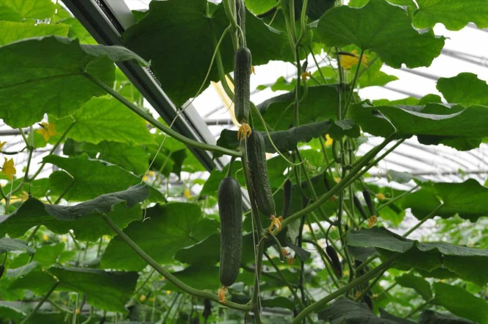

Cucumbers are one of the most satisfying crops you can grow in a home garden. Whether you enjoy them fresh in salads, pickled in jars, or sliced on sandwiches, cucumbers are fast-growing, productive, and relatively easy to cultivate with the right knowledge and care.

₹25-₹50 per Kilogram